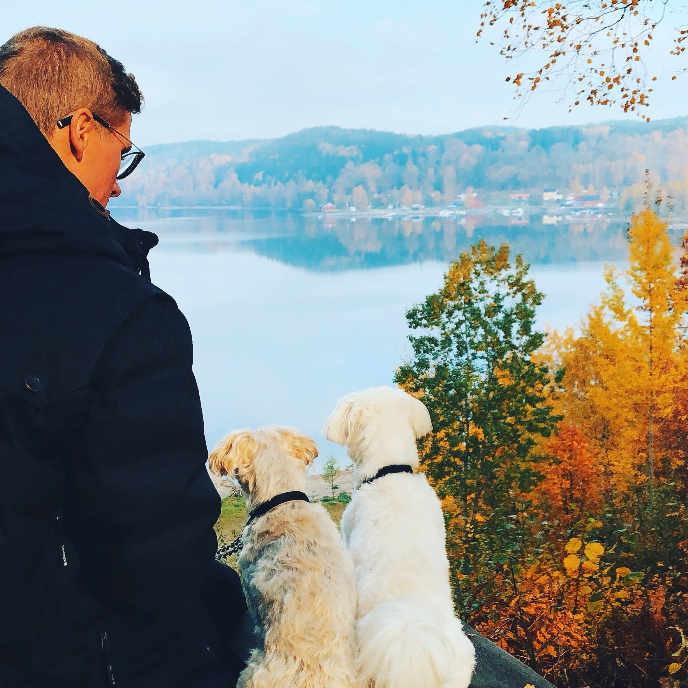
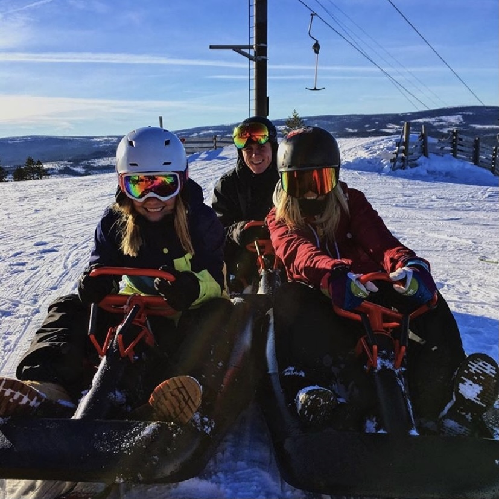
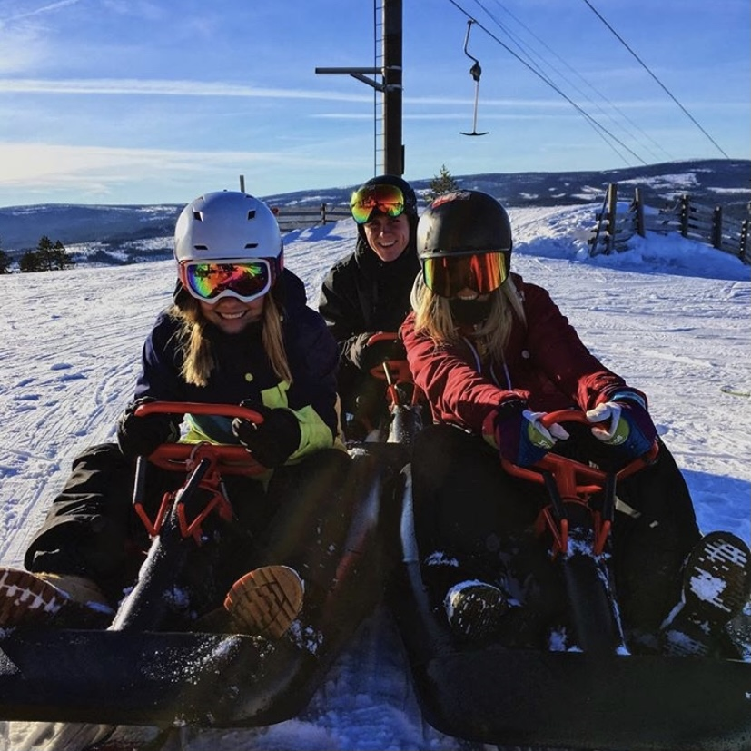
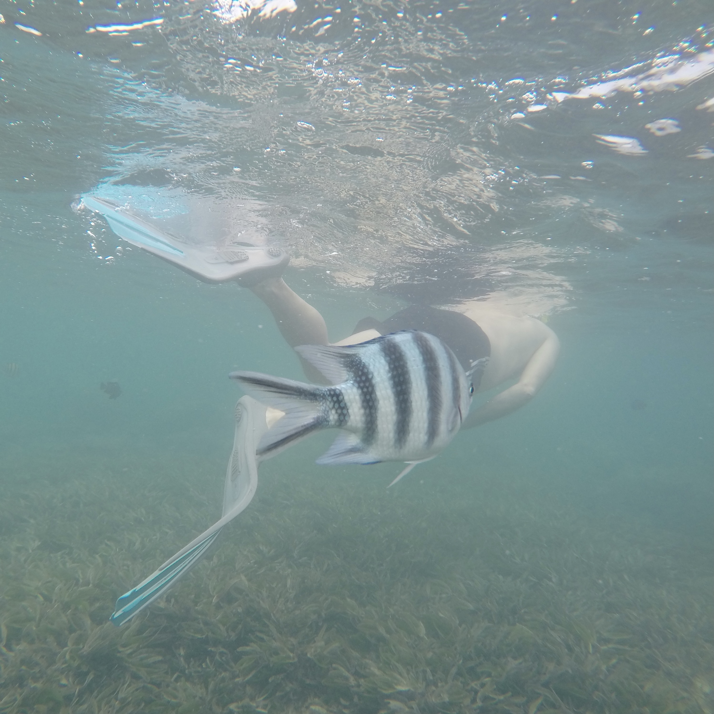
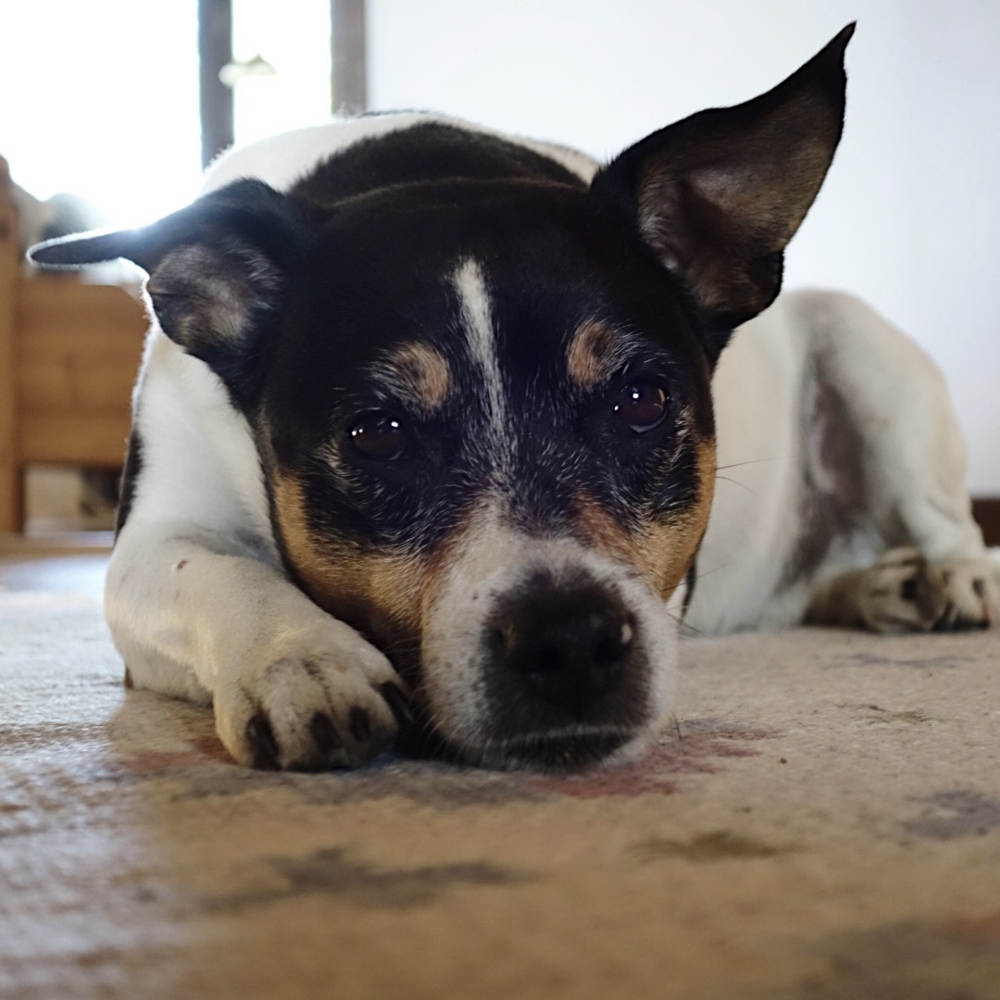
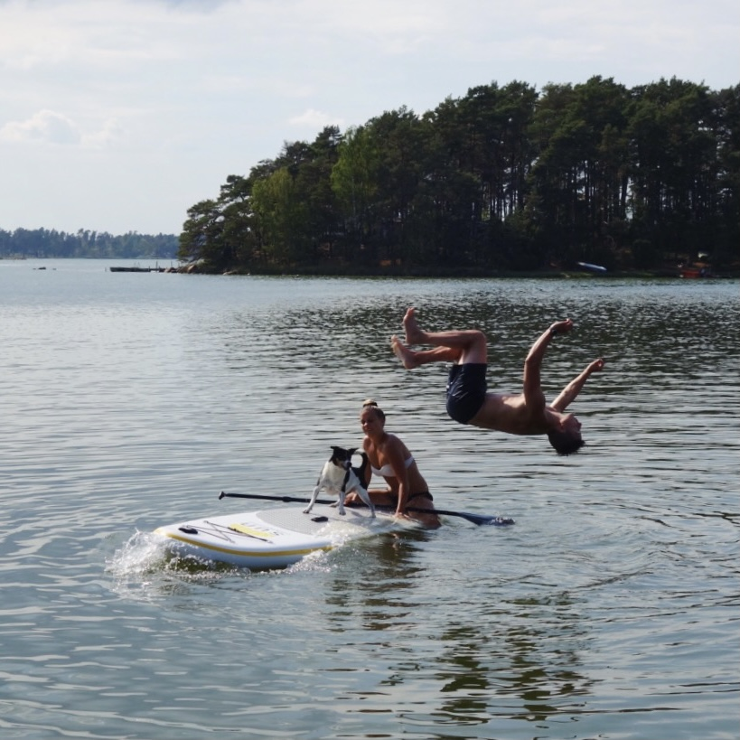

"I have no special talents,
am only passionately curious."
- Albert Einstein
Om mig
Namn: Amanda Ståhlberg
Ålder: 27år
Bor: Göteborg
Gör: Just nu pluggar jag front end utvekling på Medieinstitutet.
Egenskaper: Extremt envis = Åkt vasaloppet helt otränad!
& väldigt rolig enligt mig själv. Vem skrattar inte åt sina egna skämt.
vill du veta mer?

Intressen i mitt liv



 



